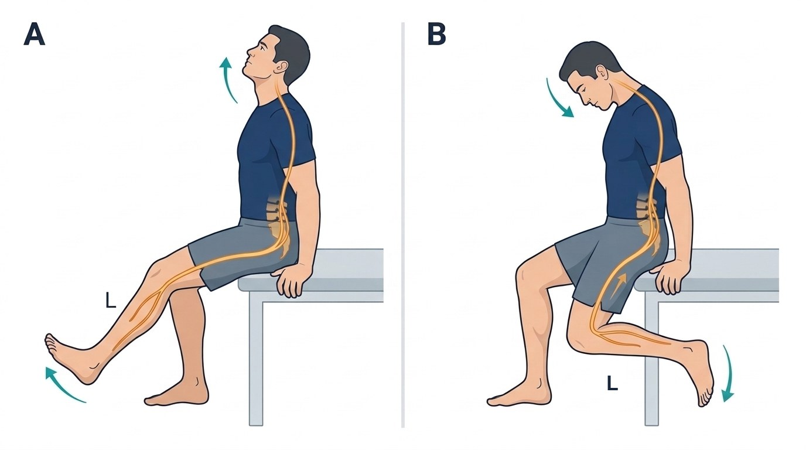

MORNING 01 · 신경 활주 확대좌측 좌골신경 슬라이더 (Sciatic Nerve Slider)
10~15회 × 1~2세트
1회 2~3초 · 끝 정지 금지
- 벤치·의자 끝에 허리를 곧게 펴고 앉습니다(오른발 바닥 고정).
- 자세 A: 왼쪽 무릎을 앞으로 펴며 발끝을 살짝 당기는 동시에 고개를 위로 듭니다(신경관 상부를 풀어주며 하부 활주).
- 자세 B: 왼쪽 무릎을 벤치 아래로 구부리며 발목 힘을 빼는 동시에 턱을 아래로 숙입니다.
중단 기준: 다리 뒤로 찌릿함·저림이 나오면 무릎을 끝까지 펴지 말고 증상 없는 각도(70~80%)까지만 왕복하세요.
근거: Basson et al. (2017, JOSPT, PMID: 28704626)